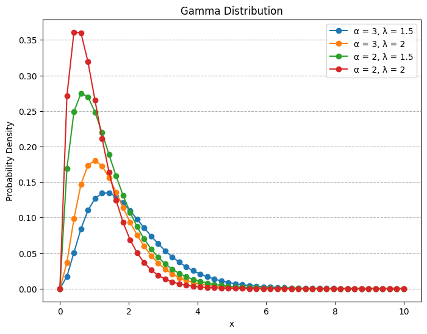

# Necessary packages
import numpy as np
import matplotlib.pyplot as plt
import seaborn as sns
# from scipy.stats import poissonRandom Variables
talks
A quick notebook on distributions in statistics and machine learning.
1. Discrete Random Variables
For a discrete random variable \(X\), we define the probability mass function \(p(\alpha)\) of \(X\) by
\[ p(\alpha) = P(X = \alpha) \]
The probability mass function \(p(\alpha)\) is positive for at most a countable number of values of \(a\). That is, if \(X\) must assume one of the values \(x_1, x_2,\dots ,\) then
\[ p(x_i) \geq 0 \text{ for } i = 1, 2, \dots \]
and
\[ \sum_{i=1}^{\infty} p(x_i) = 1 \]
The cumulative distribution function \(F(x)\) can be expressed in terms of \(p(\alpha)\) by
\[ F(\alpha) = P(X \leq \alpha) = \sum_{x_i \leq \alpha} p(x_i) \]
Expectation of a Random Variable in Discrete Case
If \(X\) is a discrete random variable having a probability mass function \(p(x)\), then the expected value of \(X\) is defined by
\[ E(X) = \sum_{x_i} x_i p(x_i) \]
1.1 Bernoulli Random Variable
A Bernoulli random variable is a discrete random variable that takes the value 1 with probability \(p\) and the value 0 with probability \(1-p\). The probability mass function of a Bernoulli random variable \(X\) is given by \[ p(x) = \begin{cases} 1-p & \text{if } x = 0 \\ p & \text{if } x = 1 \end{cases} \]
The expected value of a Bernoulli random variable is given by \[ E(X) = 0 \cdot (1-p) + 1 \cdot p = p \]
The variance of a Bernoulli random variable is given by \[ Var(X) = E(X^2) - (E(X))^2 = p - p^2 = p(1-p) \]
def bernoulli(p):
"""
Bernoulli distribution with parameter p.
"""
return np.random.binomial(1, p)
def binomial(n, p):
"""
Binomial distribution with parameters n and p.
"""
return np.random.binomial(n, p)
def geometric(p):
"""
Geometric distribution with parameter p.
"""
return np.random.geometric(p)
def negative_binomial(n, p):
"""
Negative binomial distribution with parameters n and p.
"""
return np.random.negative_binomial(n, p)1.2 Binomial Random Variable
Suppose that \(n\) independent trials, each of which results in a “success” with probability \(p\) and in a “failure” with probability \(1−p\), are to be performed. If \(X\) represents the number of successes that occur in the \(n\) trials, then \(X\) is said to be a binomial random variable with parameters \(n, p\). The probability mass function of a binomial random variable having parameters \((n, p)\) is given by
\[ p(x) = \binom{n}{x} p^x (1-p)^{n-x}, \quad x = 0, 1, \dots, n \]
where \(\binom{n}{x} = \frac{n!}{x!(n-x)!}\) is the binomial coefficient, which counts the number of ways to choose \(x\) successes from \(n\) trials.
Expectation of a Binomial Random Variable
If \(X\) is a binomial random variable with parameters \(n\) and \(p\), then the expected value of \(X\) is given by \[ E(X) = np \] ### Variance of a Binomial Random Variable If \(X\) is a binomial random variable with parameters \(n\) and \(p\), then the variance of \(X\) is given by \[ Var(X) = np(1-p) \]
The Poisson Random Variable
A random variable \(X\) taking on one of the values \(0, 1, 2, \dots,\) is said to be a Poisson random variable with parameter \(\lambda\), if for some \(\lambda > 0\),
\[ p(i) = P \{ X = i \} = e^{-\lambda} \frac{\lambda^i}{i!}, \quad i = 0, 1, \ldots \]
Expectation of a Poisson Random Variable
If \(X\) is a Poisson random variable with parameter \(\lambda\), then the expected value of \(X\) is given by
\[ E(X) = \sum_{i=0}^{\infty} i e^{-\lambda} \frac{\lambda^i}{i!} = e^{-\lambda} \sum_{i=1}^{\infty} \frac{\lambda^i}{(i-1)!} = e^{-\lambda} \lambda \sum_{i=0}^{\infty} \frac{\lambda^i}{i!} = e^{-\lambda} \lambda e^{\lambda} = \lambda \]
where we have used the identity \(\sum_{i=0}^{\infty} \frac{\lambda^i}{i!} = e^{\lambda}\).
def poisson(m, k):
"""
Calculate the Poisson probability of observing k events in an interval
given the average rate of occurrence n.
:param m: Average rate of occurrence (lambda)
:param k: Number of events
:return: Probability of observing k events
"""
from math import exp, factorial
return (m ** k) * exp(-m) / factorial(k)# Example usage
x = np.arange(0, 20) # Average rate of occurrence
lambdas = [1, 3, 5, 7, 10, 12,15] # Different values of lambda
plt.figure(figsize=(8, 6))
for lam in lambdas:
pmf = [poisson(lam, k) for k in x]
# Using scipy's poisson distribution for comparison
# pmf_scy = poisson.pmf(x, lam)
plt.plot(x, pmf, marker='o', label=f'λ = {lam}')
plt.xlabel('Number of events (k)')
plt.ylabel('Probability')
plt.title('Poisson Distribution')
plt.grid(axis= "y" , linestyle='--')
plt.legend()
plt.show()
2. Continuous Random Variables
The function \(f(x)\) is called the probability density function of the random variable \(X\). \[ P \{X \in B \} = \int_B f(x) dx \tag{1} \]
The probability that \(X\) will be in \(B\) may be obtained by integrating the probability density function over the set \(B\).
\[ P\{X \in (-\infty, \infty)\} = \int_{-\infty}^{\infty} f(x) \, dx = 1 \]
All probability statements about \(X\) can be answered in terms of \(f(x)\). For instance, letting \(B = [a, b]\), we obtain
\[ P\{a \leq X \leq b \} = \int_a^b f(x) \, dx \tag{2} \]
The relationship between the cumulative distribution \(F(\cdot)\) and the probability density \(f(\cdot)\) is expressed by
\[ F(\alpha) = P\{X \in (-\infty, \alpha]\} = \int_{-\infty}^{\alpha} f(x) \, dx \]
Differentiating both sides of the preceding yields \[ \frac{d}{d\alpha} F(\alpha) = f(\alpha) \]
That is, the density is the derivative of the cumulative distribution function. A somewhat more intuitive interpretation of the density function may be obtained from Equation (2) as
\[ P\{\alpha-\frac{\epsilon}{2} \leq X \leq \alpha+\frac{\epsilon}{2} \} = \int_{\alpha-\frac{\epsilon}{2}}^{a+\frac{\epsilon}{2}} f(x) \, dx \approx \epsilon f(x) \]
when \(\epsilon\) is small. In other words, the probability that \(X\) will be contained in an interval of length \(\epsilon\) around the point \(\alpha\) is approximately \(\epsilon f(a)\).
Expectation of a Random Variable in Continuous Case
If \(X\) is a continuous random variable having a probability density function \(f(x)\), then the expected value of \(X\) is defined by \[ E(X) = \int_{-\infty}^{\infty} x f(x) \, dx \]
2.1 Exponential Random Variables
A continuous random variable whose probability density function is given, for some \(\lambda > 0\), by: \[ f(x) = \begin{cases} \lambda e^{-\lambda x} & x \geq 0 \\ 0 & x < 0 \end{cases} \]
is said to be an exponential random variable with parameter \(\lambda\), which is the mean of the distribution. The cumulative distribution function is given by
\[ F(\alpha) = \int_0^\alpha \lambda e^{-\lambda x} \, dx, = 1-e^{-\lambda \alpha} \quad \alpha \geq 0 \]
Note that \(F(\infty) = \int_0^\infty \lambda e^{-\lambda x} \, dx = 1\).
Expectation of an Exponential Random Variable
If \(X\) is an exponential random variable with parameter \(\lambda\), then the expected value of \(X\) is given by \[ E(X) = \int_0^\infty x \lambda e^{-\lambda x} \, dx \]
Integration by parts (\(dv = \lambda e^{-\lambda x}, u = x\)) yields \[ E(X) = \left[ -\frac{x}{\lambda} e^{-\lambda x} \right]_0^\infty + \frac{1}{\lambda} \int_0^\infty e^{-\lambda x} \, dx = 0 + \frac{1}{\lambda} \cdot \frac{1}{\lambda} = \frac{1}{\lambda} \]
def exponential(x, m):
"""
Calculate the Exponential probability density function (PDF) for a given x and rate parameter m.
:param x: Value at which to evaluate the PDF
:param m: Rate parameter (1/lambda)
:return: Probability density at x
"""
from math import exp
return m * exp(-m * x) if x >= 0 else 0x = np.linspace(0, 10, 50)
lamdas = [0.1, 0.5, 1, 3, 5] # Different values of lambda
plt.figure(figsize=(8, 6))# Plotting the Exponential distribution
for lam in lamdas:
pdf = [exponential(i, lam) for i in x]
plt.plot(x, pdf, marker='o', label=f'λ = {lam}')
plt.xlabel('x')
plt.ylabel('Probability Density')
plt.title('Exponential Distribution')
plt.grid(axis= "y" , linestyle='--')
plt.legend()
plt.show()2.2 Gamma Random Variables
A continuous random variable whose density is given by: \[ f(x) = \begin{cases} \frac{\lambda e^{- \lambda x} {(\lambda x)}^{\alpha-1}}{\Gamma (\alpha)} & x \geq 0 \\ 0 & x < 0 \end{cases} \]
for some \(\lambda>0\) and \(\alpha>0\) is said to be a gamma random variable with parameters \(\alpha, \lambda\).
The quantity \(\Gamma (\alpha)\) is called the gamma function and is defined by
\[ \Gamma (\alpha) = \int_0^\infty e^{-x} x^{\alpha-1} \, dx = (\alpha-1)! \]
Expectation of a Gamma Random Variable
If \(X\) is a gamma random variable with parameters \(\alpha\) and \(\lambda\), then the expected value of \(X\) is given by \[ E(X) = \int_0^\infty x \frac{\lambda e^{- \lambda x} {(\lambda x)}^{\alpha-1}}{\Gamma (\alpha)} \, dx = \frac{1}{\lambda} \int_0^\infty e^{-x} x^{\alpha} \, dx = \frac{1}{\lambda} \cdot \Gamma (\alpha + 1) = \frac{1}{\lambda} \cdot \alpha \Gamma (\alpha) = \frac{\alpha}{\lambda} \]
def gamma(x, alpha, lamd):
"""
Calculate the Gamma probability density function (PDF) for a given x, shape parameter alpha, and scale parameter lamd.
:param x: Value at which to evaluate the PDF
:param alpha: Shape parameter (alpha)
:param lamd: Scale parameter (lamda)
:return: Probability density at x
"""
from math import exp, factorial
return (lamd*exp(-lamd*x)*((lamd*x)**(alpha-1)))/factorial(alpha) if x >= 0 else 0x = np.linspace(0, 10, 50) # Range of x values for the gamma distribution
alpha_values = [3, 2] # Different values of alpha (shape parameter)
lambdas = [1.5, 2] # Different values of lambda (scale parameter)
plt.figure(figsize=(8, 6)) # Plotting the Gamma distribution
for alpha in alpha_values:
for lam in lambdas:
pdf = [gamma(i, alpha, lam) for i in x]
plt.plot(x, pdf, marker='o', label=f'α = {alpha}, λ = {lam}')
plt.xlabel('x')
plt.ylabel('Probability Density')
plt.title('Gamma Distribution')
plt.grid(axis= "y" , linestyle='--')
plt.legend()
plt.show()
2.3 Normal Random Variables
We say that \(X\) is a normal random variable (or simply that \(X\) is normally distributed) with parameters \(\mu\) and \(\sigma ^2\) if the density of X is given by
\[ f(x) = \frac{1}{\sqrt{2\pi}\sigma} e^{-(x-\mu)/ 2\sigma^2} \quad -\infty < x < \infty \]
This density function is a bell-shaped curve that is symmetric around \(\mu\).
The mean of the normal distribution is \(\mu\) and the variance is \(\sigma^2\). The cumulative distribution function is given by
\[ F_X(\alpha) = P(X \leq \alpha) = \int_{-\infty}^ \alpha \frac{1}{\sqrt{2\pi}\sigma} e^{-(x-\mu)/ 2\sigma^2} \, dx \]
Expectation of a Normal Random Variable
If \(X\) is a normal random variable with parameters \(\mu\) and \(\sigma^2\), then the expected value of \(X\) is given by \[ E(X) = \int_{-\infty}^\infty x \frac{1}{\sqrt{2\pi}\sigma} e^{-(x-\mu)/ 2\sigma^2} \, dx = \mu \int_{-\infty}^\infty \frac{1}{\sqrt{2\pi}\sigma} e^{-(x-\mu)/ 2\sigma^2} \, dx = \mu \cdot 1 = \mu \]
import numpy as np
import matplotlib.pyplot as plt
import seaborn as sns
import pandas as pddef normal(x, mu, sigma):
"""
Calculate the Normal probability density function (PDF) for a given x, mean mu, and standard deviation sigma.
:param x: Value at which to evaluate the PDF
:param mu: Mean of the distribution
:param sigma: Standard deviation of the distribution
:return: Probability density at x
"""
from math import exp, pi
return (1 / (sigma * (2 * pi) ** 0.5)) * exp(-0.5 * ((x - mu) / sigma) ** 2)
# Example usage
mu =50 # Mean of the distribution
std_devs = [5, 10, 20] # Different standard deviations
# X range for plotting
x = np.linspace(0, 100, 100)
# Plot each distribution
for sigma in std_devs:
# y = norm.pdf(x, loc=mu, scale=sigma)
y = [normal(i, mu, sigma) for i in x]
plt.plot(x, y, label=f'std = {sigma}')
plt.title('Normal Distributions with Different Standard Deviations')
plt.xlabel('Value')
plt.ylabel('Density')
plt.legend()
plt.grid(True)
plt.show()Expectation of a Function of a Random Variable
In Discrete Case
If \(X\) is a discrete random variable having a probability mass function \(p(x)\), and \(g(x)\) is a function of \(x\), then the expected value of \(g(X)\) is defined by \[ E(g(X)) = \sum_{x_i} g(x_i) p(x_i) \] ### In Continuous Case If \(X\) is a continuous random variable having a probability density function \(f(x)\), and \(g(x)\) is a function of \(x\), then the expected value of \(g(X)\) is defined by \[ E(g(X)) = \int_{-\infty}^{\infty} g(x) f(x) \, dx \]
Jointly Distributed Random Variables
We are often interested in probability statements concerning two or more random variables. To deal with such probabilities, we define, for any two random variables \(X\) and \(Y\), the joint cumulative probability distribution function of \(X\) and \(Y\) by
\[ F(a,b) = P(X \leq a, Y \leq b), \quad -\infty < a,b < \infty \]
The cumulative distribution of \(X\) can be obtained from the joint distribution of \(X\) and \(Y\) as follows:
\[ \begin{align*} F_X(a) &= P(X \leq a) \\ & = P(X \leq a, Y \leq \infty) \\ & = F(a, \infty) \\ \end{align*} \]
Similarly, the cumulative distribution of \(Y\) can be obtained from the joint distribution of \(X\) and \(Y\) as follows: \[ F_Y(b) = P(Y \leq b) = F(\infty, b) \]
Discrete Case
In the case where \(X\) and \(Y\) are both discrete random variables, it is convenient to define the joint probability mass function of X and Y by
\[ p(x,y) = P(X = x, Y = y) \]
The probability mass function of \(X\) can be obtained from \(p(x,y)\) by \[ p_X(x) = P(X = x) = \sum_{y:p(x,y)>0} p(x,y) \] Similarly, the probability mass function of \(Y\) can be obtained from \(p(x,y)\) by \[ p_Y(y) = P(Y = y) = \sum_{x:p(x,y)>0} p(x,y) \]
Continuous Case
We say that \(X\) and \(Y\) are jointly continuous if there exists a function \(f(x,y)\), defined for all real \(x\) and \(y\), having the property that for all sets of \(A\) and \(B\) of real numbers, \[ P(X \in A, Y \in B) = \int_B \int_A f(x,y) \, dx \, dy \]
The function \(f(x,y)\) is called the joint probability density function of \(X\) and \(Y\). The probability density function of \(X\) can be obtained from a knowledge of \(f(x,y)\) by following reasoning: \[ \begin{align*} P(X \in A) &= P(X \in A, Y \in (-\infty, \infty)) \\ &= \int_{-\infty}^{\infty} \int_A f(x,y) \, dx \, dy \\ &= \int_A f_X(x) \, dx \\ \end{align*} \]
where
\[ f_X(x) = \int_{-\infty}^{\infty} f(x,y) \, dy \]
is thus the probability density function of \(X\) (Marginal density). Similarly, the probability density function of \(Y\) can be obtained from a knowledge of \(f(x,y)\) by \[ f_Y(y) = \int_{-\infty}^{\infty} f(x,y) \, dx \]
Since cumulative distribution function is defined as \[ F(a,b) = P(X \leq a, Y \leq b) = \int_{-\infty}^a \int_{-\infty}^b f(x,y) \, dx \, dy \]
differentiation yields \[ \frac{\partial^2}{\partial a \partial b} F(a,b) = f(a,b) \]
Thus, as in the single variable case, differentiating the probability distribution function gives the probability density function.
Expectation of one random variable for jointly distributed random variables
In Discrete Case
In the discrete case, if \(X\) and \(Y\) are jointly distributed random variables, then the expected value of \(X\) is given by \[ E(X) = \sum_{x_i} \sum_{y_j} x_i p(x_i,y_j) \] and the expected value of \(Y\) is given by \[ E(Y) = \sum_{x_i} \sum_{y_j} y_j p(x_i,y_j) \]
In Continuous Case
The expected value of \(X\) is given by
\[ E(X) = \int_{-\infty}^{\infty} \int_{-\infty}^{\infty} x f(x,y) \, dx \, dy \]
Similarly, the expected value of \(Y\) is given by \[ E(Y) = \int_{-\infty}^{\infty} \int_{-\infty}^{\infty} y f(x,y) \, dx \, dy \]
Expectation of a Function of a Two Random Variables
If \(X\) and \(Y\) are random variables and \(g\) is a function of two variables, then
\[ \begin{align*} E(g(X,Y)) &= \sum_{x_i} \sum_{y_j} g(x_i,y_j) p(x_i,y_j) \quad \text{ in the discrete case} \\ &= \int_{-\infty}^{\infty} \int_{-\infty}^{\infty} g(x,y) f(x,y) \, dx \, dy \quad \text{ in the continuous case} \end{align*} \]
import numpy as np
import matplotlib.pyplot as plt
from scipy.stats import multivariate_normal
# Define the grid
x = np.linspace(-3, 3, 100)
y = np.linspace(-2, 2, 50)
X, Y = np.meshgrid(x, y)
# Mean vector and covariance matrix
mu = [0, 0] # Mean at (0, 0)
Sigma = [[1, 0.7], [0.7, 1]] # Covariance matrix
# Create the multivariate normal distribution
rv = multivariate_normal(mean=mu, cov=Sigma)
Z = rv.pdf(np.dstack((X, Y)))
# Plot the surface
fig = plt.figure(figsize=(15,8))
ax = fig.add_subplot(111, projection='3d')
ax.plot_surface(X, Y, Z, cmap='viridis')
ax.set_xlabel('X')
ax.set_ylabel('Y')
ax.set_zlabel('f(x,y)')
ax.set_title('Joint PDF Surface of (X,Y)')
plt.show()Independent Random Variables
The random variables \(X\) and \(Y\) are said to be independent if, for all \(a, b,\) \[ P(X \leq a, Y \leq b) = P(X \leq a) P(Y \leq b) \]
In terms of the joint cumulative distribution function, this means that \[ F(a,b) = F_X(a) F_Y(b) \]
When \(X\) and \(Y\) are discrete random variables, the independence condition can be expressed as \[ p(x,y) = p_X(x) p_Y(y) \]
When \(X\) and \(Y\) are joint continuous, the independence reduces to \[ f(x,y) = f_X(x) f_Y(y) \]
Proof for discrete case
Suppose that the joint probability mass function \(p(x,y)\), then
\[ \begin{align*} P(X \leq a, Y \leq b) &= \sum_{y \leq b} \sum_{x \leq a} p(x,y) \\ &= \sum_{y \leq b} \sum_{x \leq a} p_X(x) p_Y(y) \\ &= \left( \sum_{x \leq a} p_X(x) \right) \left( \sum_{y \leq b} p_Y(y) \right) \\ &= P(X \leq a) P(Y \leq b) \end{align*} \]
and so \(X\) and \(Y\) are independent.
Proof for continuous case
Suppose that the joint probability density function \(f(x,y)\), then \[ \begin{align*} P(X \leq a, Y \leq b) &= \int_{-\infty}^a \int_{-\infty}^b f(x,y) \, dx \, dy \\ &= \int_{-\infty}^a \int_{-\infty}^b f_X(x) f_Y(y) \, dx \, dy \\ &= \left( \int_{-\infty}^a f_X(x) \, dx \right) \left( \int_{-\infty}^b f_Y(y) \, dy \right) \\ &= P(X \leq a) P(Y \leq b) \end{align*} \]
Covariance and Variance of Sums of Random Variables
The covariance of any two random variables \(X\) and \(Y\), denoted by \(Cov(X,Y)\), is defined by \[ Cov(X,Y) = E[(X - E(X))(Y - E(Y))] = E(XY) - E(X)E(Y) \] The variance of a random variable \(X\), denoted by \(Var(X)\), is defined by \[ Var(X) = E[(X - E(X))^2] = E(X^2) - (E(X))^2 \]